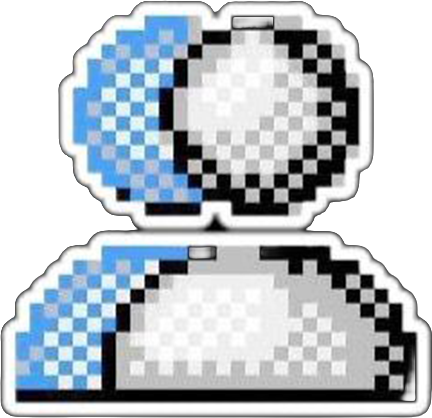
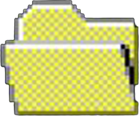
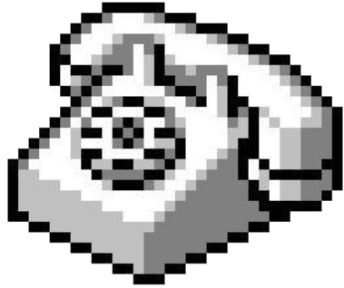
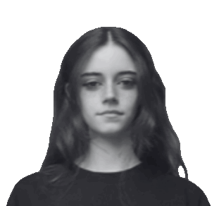
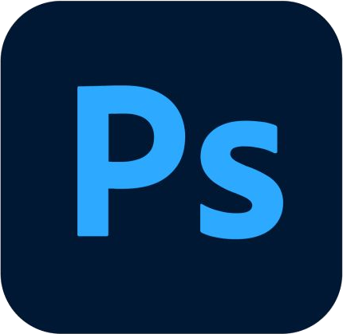
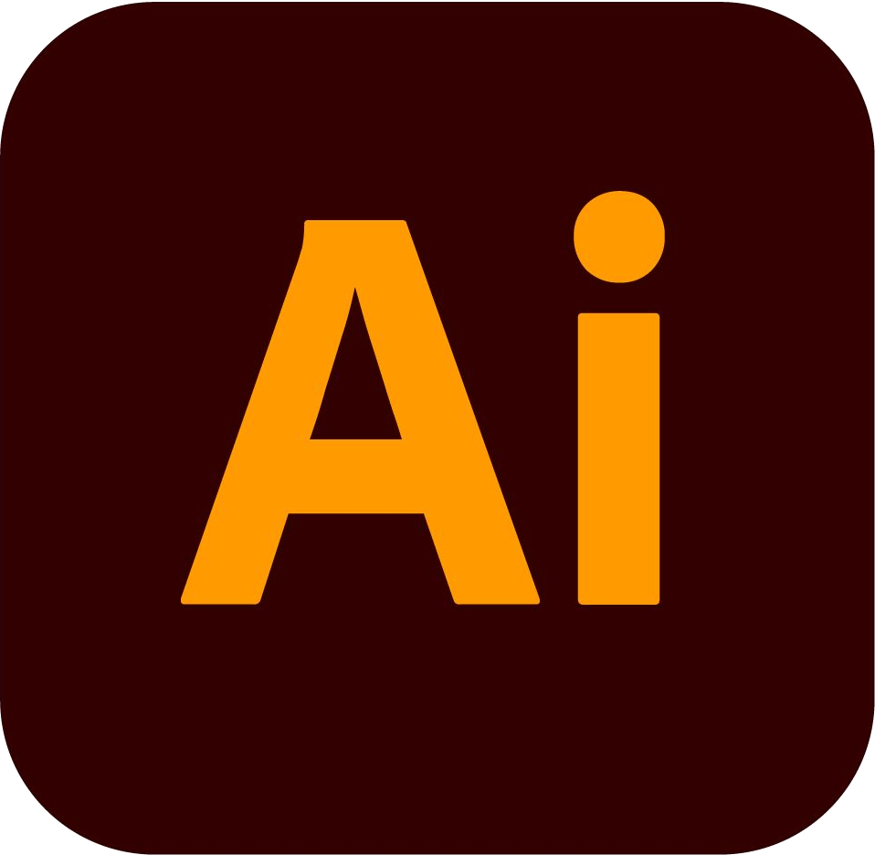
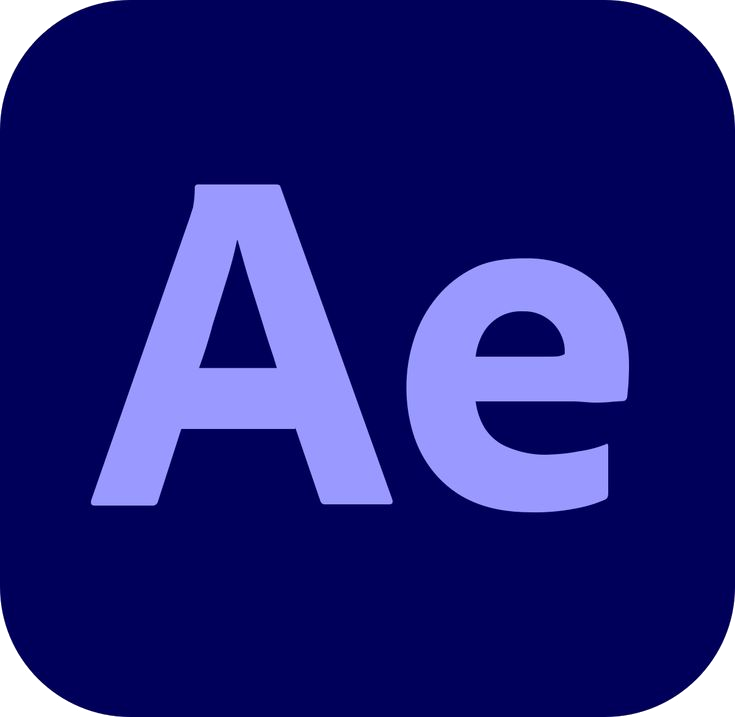
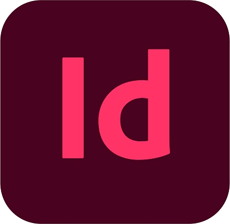
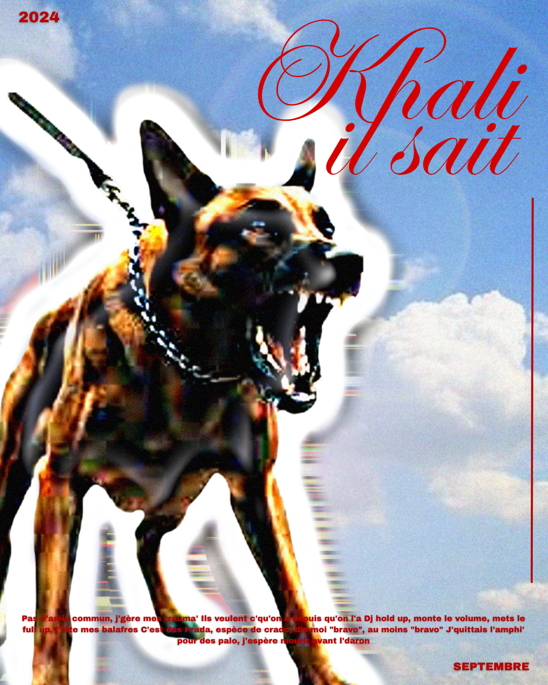
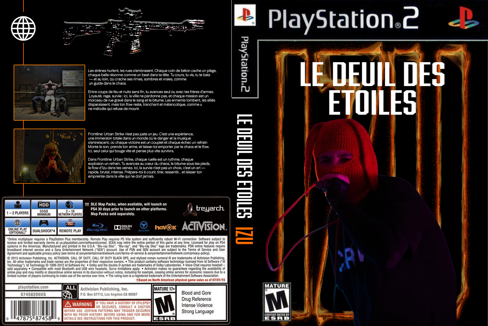

À propos

Moi

Productions

Contact

Musique



Je m'appelle Elyse Spada ...
Mon Parcours
→ J'ai fait un bac avec les spécialités HLP et cinéma-audiovisuelle
→ Par la suite j'ai fait une année de licence en lettres modernes à la sorbonne sur le campus de Malsherbes tout en travaillant au Mcdonald dans les galeries des Champs Elysées.
→ Après cette année de fac j'ai décidé de m'orienter dans la communication qui est un milieu qui m'attirer déjà depuis le lycée. J'ai connu l'école Isifa plus values grâce à Parcoursup.
→ J'ai eu l'opportunité de travailler en tant qu'alternante pour la compagnie de théâtre Ideal Nova pendant 4 mois.
→ Je suis encore à la recherche d'une alternance dans le dommaine de la communication.
Mes Objectifs
→ Après avoir validé mon BTS communication, je souhaiterais continuer mes études jusqu'au master probablement dans une filière plus créative.
→ J'ai choisis la communication car je souhaite travailler dans l'univers de la musique, m'occuper des artistes, de leurs developpements, les aider à créer leurs pâtes artistiques, communautés, stratégies et ect




Centre d'intérêt
.
→ J'aime énormement la musique, j'aime décourvivre de nouveaux styles, voir ce qui se fait dans les différents pays
→ Je pesse la plus part de mon temps sur photoshop et after effects, j'aime créer et imaginer de nouveaux design et repondre aux demandes
→ J'apprécie les films, series et animés, c'est d'ailleurs pour ça qu'au lycée j'ai choisis la spécialité audeivisuelle. J'aime l'image et surtout le grain, la couleur du réalisateur Tim Burton depuis que je suis petite. Naturellement attirer vers le sombre, le moche beau.





Créer un visuel fort pour le rappeur 34Murphy, mêlant mystère et menace. La chouette, symbole de sagesse, devient une cible marquée par la violence (viseur rouge, yeux ensanglantés), reflétant un univers sombre et audacieux
- - -
Affiche promotionnelle pour un projet musical. L’objectif est d’attirer l’attention avec une esthétique contrastée et provocante, en accord avec l’identité du rappeur.
en travaux
en travaux
en travaux
en travaux